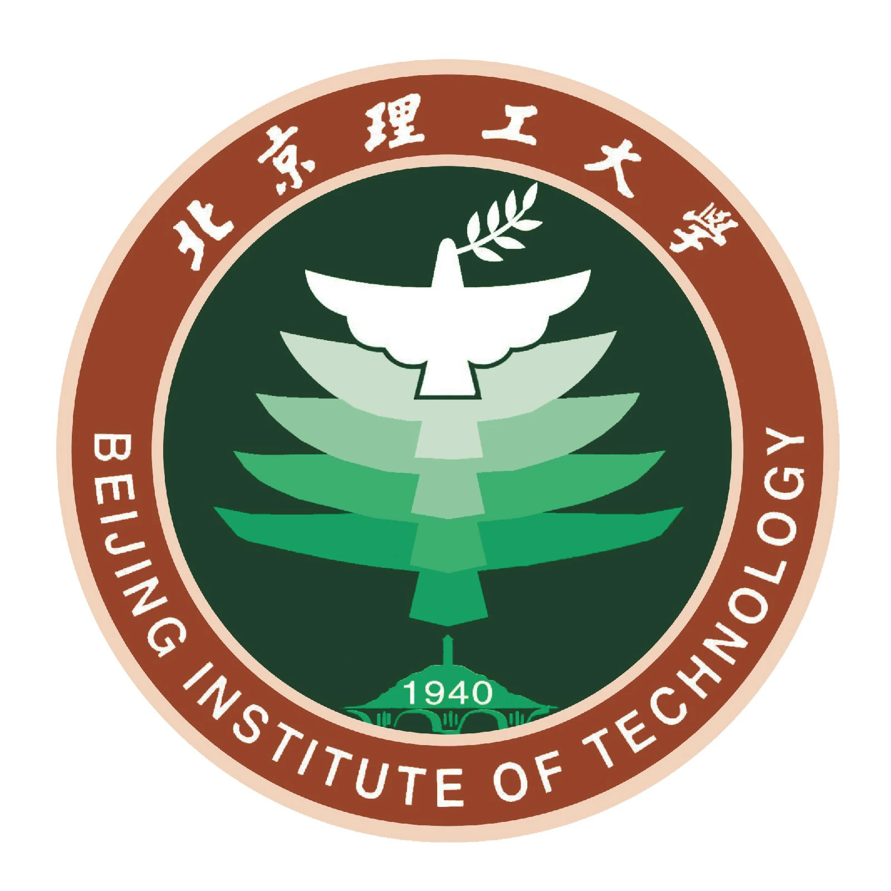
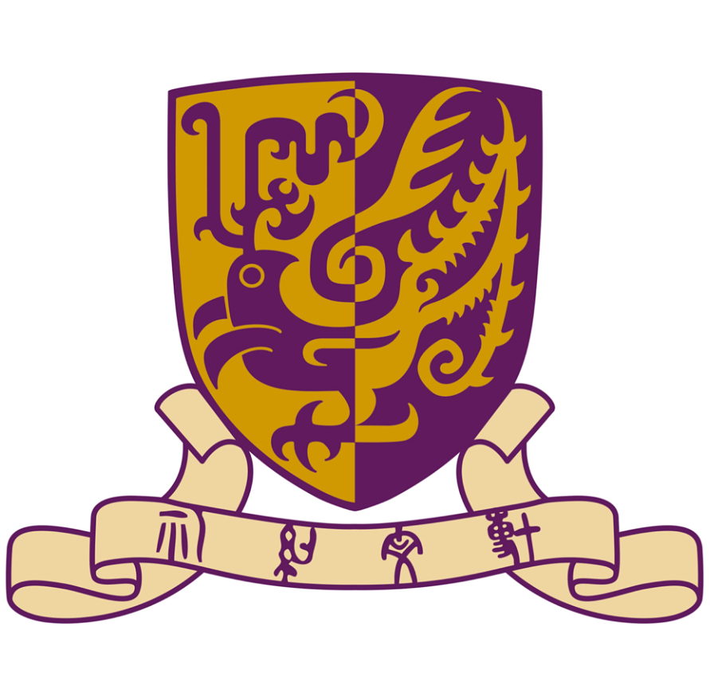

AI Algorithm Engineer AI 算法工程师
Renqiang He 和任强
和任强 Renqiang He
I build production AI agents for audio and video: foundation models, private-domain knowledge, and multimodal interaction. Previously I led spoken-misinformation research with CUHK-Shenzhen and Huawei. 我在做面向音视频的生产级 AI 智能体，覆盖基座模型、私域知识和多模态交互。此前在香港中文大学（深圳）与华为的合作研究中负责语音虚假信息检测。
01
About 关于
I am an AI algorithm engineer at Malanshan Audio-Video Laboratory. My current work trains and aligns agent foundations for commercial audio-video products: intent and procedure modules, daily knowledge insight, affective multimodal dialogue, and data pipelines that correct ASR annotation. 我是马栏山音视频实验室的 AI 算法工程师。当前工作是为音视频产品训练和对齐智能体基座，包括意图与规程模块、天级知识洞察、情感化多模态对话，以及纠正 ASR 标注的数据管线。
I earned a bachelor’s degree in Software Engineering and a master’s degree in Computer Technology at Beijing Institute of Technology. My hometown is the Old Town of Lijiang, Yunnan. 我本科毕业于北京理工大学软件工程专业，硕士毕业于计算机技术专业。籍贯云南省丽江市古城区。
- Based in audio-video AI 方向：音视频 AI
- Lijiang, Yunnan 云南 · 丽江
- GitHub
Languages I use in production 熟练掌握的语言
02
Education 教育背景

Beijing Institute of Technology 北京理工大学
Project 985 · Project 211 · Double First-Class · Haidian, Beijing 教育部第一批直属 985 · 211 · 国家双一流 · 北京市海淀区
2022.09 — 2025.06
M.Eng. Computer Technology 计算机技术 · 硕士
GPA 85.7. Ranked in the top 5% of the major. Minority Scholarship and Excellent Scholarship. GPA 85.7，专业排名前 5%。获少数民族奖学金、优秀奖学金。
2018.09 — 2022.06
B.Eng. Software Engineering 软件工程 · 本科
Ranked in the top 5% of the major across both degrees. 本硕阶段专业排名均位于前 5%。
03
Work 工作经历
Three agent systems at Malanshan. Ten patent applications filed independently: four, five, and one. 马栏山的三套智能体系统。已独立申请专利 10 篇，分别为 4 篇、5 篇和 1 篇。
Malanshan Audio-Video Laboratory 马栏山音视频实验室
AI Algorithm Engineer AI 算法工程师
01
4 patent applications
独立申请专利 4 篇
Intelligent Assistant Agent Foundation 智能助手 AI-Agent 基座
- Trained and optimized a foundation LLM, with stronger intent recognition and procedure modules. RLHF, DPO, and related methods improved the base model. Adaptive workflows and VLA-style models parse internal knowledge for classified, private-domain RAG. 训练并优化基础 LLM，加强意图识别与规程模块，用 RLHF、DPO 等方法提升基座性能。结合自适应工作流与 VLA 等模型做混合解析，建成内部分类私域知识的 RAG 问答，服务大模型商业化。
- An insight agent refreshes external knowledge every day: it cleans each item, classifies it, scores internal-external relevance, and decides what to push. It also drafts a daily insight deck and a live visualization. 洞察 Agent 按天更新外部知识：清洗每条洞察、完成分类和内外部关联分析，再由模型自主决策并精选推送，同时生成天级洞察 PPT 大纲和动态可视化。
- For the China Film Science Research Institute text-to-film project, ReAct and complex procedure training split scripts so generation stays efficient and character control stays consistent. 支撑中国电影科学研究所的文生电影项目：用 ReAct 和复杂任务规程训练拆分剧本，提高生成效率，并加强人物规控的一致性与准确性。
02
5 patent applications
独立申请专利 5 篇
Realtime Multimodal Affective Agent 实时多模态情感交互 AI-Agent
- Trained a VLM so a proactive interaction model can drive multimodal experiences. Grammar checking reduced the latency of scheduled tasks. 训练 VLM，让主动交互模型支持多模态体验，并通过文法检测优化定时任务时延。
- Tuned the live interaction loop so low-compute edge devices can join. 实时优化交互体验，并支持小算力端侧硬件接入。
- Face and emotion detectors, jointly optimized with the VLM, let the dialogue module inject emotion and control its intensity. 人脸与情绪检测模型联合 VLM 优化对话模块，使情感能够自适应注入并调节强度。
03
1 patent application
独立申请专利 1 篇
Data-Flow Agent Foundation 数据流转基座 AI-Agent
- Following a data-generation paradigm from Carnegie Mellon University, trained a synthesis model for natural dialogue and classification data in realistic settings. RL and DPO then improved naturalness and usability. 参考卡内基梅隆大学提出的数据生成范式，自训练数据合成模型，用来模拟真实场景中的自然对话和分类数据，再用 RL 与 DPO 提高数据的自然度和可用性。
- An agent pipeline self-corrects ASR-annotated audio from real scenes, cutting about ¥800,000 in manual correction cost on the related project. 用 AI-Agent 为真实场景的 ASR 标注音频搭建自主纠错管线，相关项目大约减少 80 万标注纠错人力成本。
04
Research & internships 科研访学与实习
-

2024.07 — 2024.11
CUHK-Shenzhen × Huawei Singapore 香港中文大学（深圳）× 华为（新加坡）
Research lead · AI speech-security dataset 研究组长 · AI 语音安全检测音频数据集
Proposed spoken misinformation detection as a new task. Generated and consolidated a dataset with TTS models, then built a three-stage detection pipeline. I cleaned the text and speech, produced the audio, assembled the pipeline, and wrote the paper. 提出语音领域虚假信息检测这一新任务，用 TTS 生成并整合数据形成数据集，再搭建三阶段检测流程。我负责文本与语音清洗、音频数据生成、三阶段模型流程搭建，以及论文撰写。
-
2024.03 — 2024.07
Tongji Psychology × Toyota × FORVIA 同济心理 × 丰田 × FORVIA
Algorithm engineer · MBTI personality model and text-to-video 算法工程师 · MBTI 人格大模型与文生视频
Fine-tuned the Qwen series, built the data pipeline, and tuned classification and dialogue models with automated prompts. Engineering work focused on speed. I trained the psychological-mode and intervention-mode classifiers, and the personality model. 使用 Qwen 系列做微调，完成数据管线、分类模型与对话模型微调，并设计自动化 prompt，同时用工程方法提升速度。负责心理模式与干预模式的分类大模型，以及人格大模型训练。
-
2023.02 — 2023.11
NIO 蔚来汽车
Algorithm engineer · LLM test-case generation 算法工程师 · 大语言模型测试用例生成
Turned requirement documents into test-case documents with a large model, RAG, and a database. I fine-tuned LLaMA, designed multi-level test prompts and chain-of-thought, cleaned text, built the RAG and retrieval stack, and designed and implemented the frontend APIs. 用大模型、RAG 和数据库，把输入的需求文档生成测试用例文档。负责 LLaMA 微调、多级测试 prompt、思维链、文本清洗、RAG 与检索系统，以及前端接口的设计与实现。
05
Selected outcomes 研究成果
IEEE SLT 2024 · Best Student Paper · Equal contribution IEEE SLT 2024 · 最佳学生论文 · 共同一作
SpMis: An Investigation of Synthetic Spoken Misinformation Detection
The public author list marks the first three authors, including me, as equal contribution. The paper introduces the SpMis dataset and a three-stage detection baseline for synthetic spoken misinformation. 论文作者列表将包括我在内的前三位作者标注为同等贡献。工作提出 SpMis 数据集，以及面向合成语音虚假信息的三阶段检测基线。
Computer Science · CCF T2 journal · Student first author 《计算机科学》· CCF T2 期刊 · 学生一作
A Single-Stage Unsupervised Visible-Infrared Cross-Modal Person Re-Identification Method 一种单阶段无监督可见光-红外跨模态行人重识别方法
Journal paper on single-stage unsupervised visible-infrared person re-identification. 面向单阶段无监督可见光-红外跨模态行人重识别的期刊论文。
Open source 开源
Active in the GitHub and Hugging Face communities, contributing to OpenMMLab and Amphion. Those projects have accumulated more than 10k stars. 在 GitHub 与 Hugging Face 社区参与 OpenMMLab 和 Amphion。相关项目累计超过 10k stars。
Honors 荣誉
- VocalGuard — speech-and-text anti-fraud entry, awarded at the WeBank FinTech Competition in Shenzhen. VocalGuard — 金融安全领域语音文本联合防欺诈作品，获深圳微众银行金融科技大赛奖项。
- Minority Scholarship and Excellent Scholarship, Beijing Institute of Technology. 北京理工大学少数民族奖学金、优秀奖学金。
- Bronze Award, 15th Challenge Cup (2020). 第十五届“挑战杯”铜奖（2020）。
- Second Prize, Xindao Cup Yunnan student sand-table competition (2020). “新道杯”云南省学生沙盘比赛二等奖（2020）。
06
Contact 联系
Email and phone are the fastest way to reach me. The form opens your mail client with the message filled in. 邮件和电话最快。下面的表单会打开邮件客户端，并带上你写下的内容。